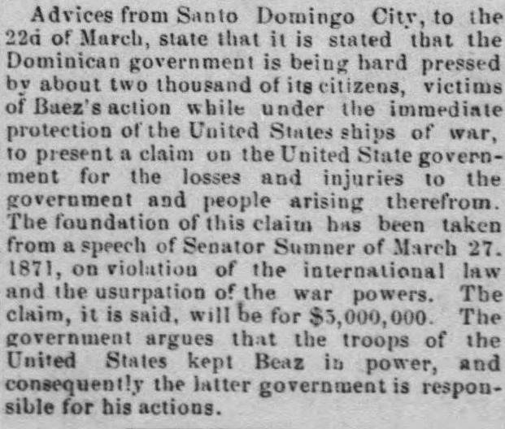
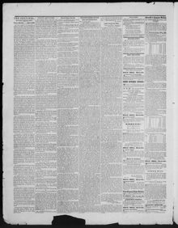

Advices from Santo Domingo City, to the 22d of March, stateNoticias de la ciudad de Santo Domingo, hasta el 22 de marzo, afirman
Montgomery County Sentinel. Rockville, Md., April 9, 1875. Page 2. View the originalVer el original


See the full pageVer la página completaBased on advices from Santo Domingo City dated March 22, the Dominican government is reportedly being pressed by about two thousand citizens—who claim they were victims of Baez's actions while under the protection of U.S. warships—to present a $3,000,000 claim against the United States government. The claim's foundation derives from a speech by Senator Sumner on March 27, 1871, regarding the violation of international law and the usurpation of war powers, with the argument that U.S. troops kept Baez in power and made the U.S. responsible for his actions.Conforme a despachos procedentes de la ciudad de Santo Domingo con fecha 22 de marzo, el gobierno dominicano se encuentra presionado por unos dos mil ciudadanos —quienes aseguran haber sido víctimas de las acciones de Báez mientras gozaba de la protección de buques de guerra estadounidenses— para elevar un reclamo de 3.000.000 de dólares contra el gobierno de los Estados Unidos. El reclamo se sustenta en un discurso del senador Sumner pronunciado el 27 de marzo de 1871 sobre la vulneración del derecho internacional y la usurpación de prerrogativas bélicas, esgrimiendo que tropas estadounidenses sostuvieron a Báez en el poder y responsabilizaron a los EE. UU. por sus actos.
FULL TEXT:TEXTO COMPLETO:
Advices from Santo Domingo City, to the 22d of March, state that it is stated that the Dominican government is being hard pressed by about two thousand of its citizens, victims of Baez's action while under the immediate protection of the United States ships of war, to present a claim on the United State government for the losses and injuries to the government and people arising therefrom. The foundation of this claim has been taken from a speech of Senator Sumner of March 27, 1871, on violation of the international law and the usurpation of the war powers. The claim, it is said, will be for $5,000,000. The government argues that the troops of the United States kept Beaz in power, and consequently the latter government is responsible for his actions.Noticias de la ciudad de Santo Domingo, hasta el 22 de marzo, afirman que se afirma que el gobierno dominicano está siendo fuertemente presionado por unos dos mil de sus ciudadanos, víctimas de la acción de Báez mientras estaba bajo la protección inmediata de los buques de guerra de los Estados Unidos, para presentar una reclamación al gobierno de los Estados Unidos por las pérdidas y daños al gobierno y al pueblo surgidos de ello. El fundamento de esta reclamación ha sido tomado de un discurso del Senador Sumner del 27 de marzo de 1871, sobre la violación del derecho internacional y la usurpación de los poderes de guerra. La reclamación, se dice, será por $5,000,000. El gobierno sostiene que las tropas de los Estados Unidos mantuvieron a Beaz en el poder, y en consecuencia este último gobierno es responsable de sus acciones.
Hon. John Ritchie is mentioned as a candidate for Governor.El honorable John Ritchie es mencionado como candidato para Gobernador.